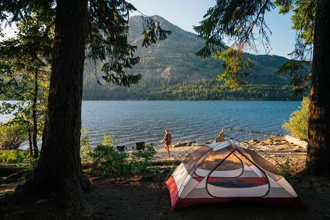

Pucón
Acceso gratuito
Playa Grande de Pucón
Playa urbana sobre el lago Villarrica, con servicios, gastronomía y actividades náuticas durante la temporada estival.
- Precio: acceso público gratuito; estacionamientos y servicios tienen costo
- Acceso: ruta CH-199, a unos 80 km de Temuco
- Mejor época: diciembre a marzo
Seguridad: báñate solo en zonas habilitadas, respeta las banderas y no ingreses al lago cuando haya viento o marejadas.